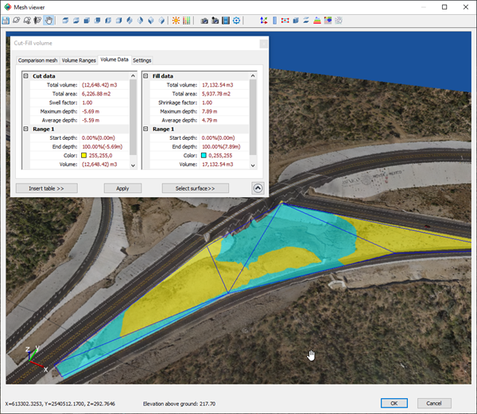
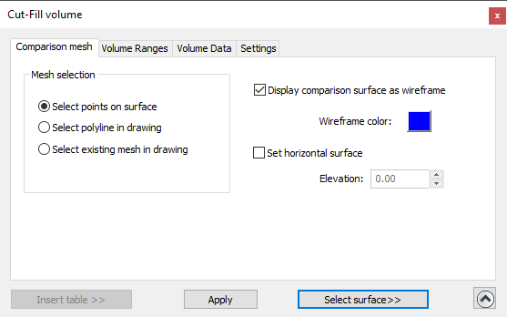
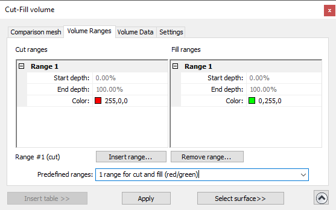
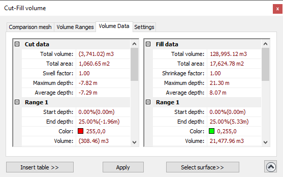
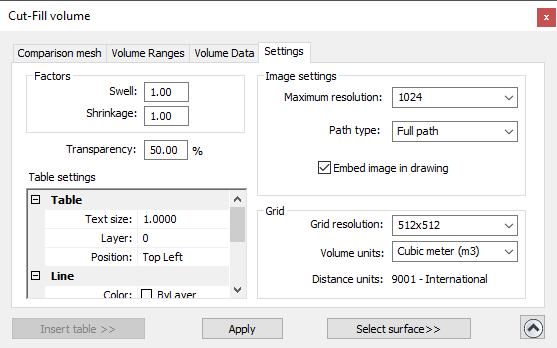

|
|
Toolbar:
Menu: CAD-Earth > Mesh commands > Mesh Viewer
|
|
|
Command line: CE_MESHVIEWER Mesh Viewer toolbar: CAD-Earth version: Premium. |
.png)
.png)
.png)
Command description:
Instantly get cut-fill volumes between two meshes inside a closed polygon. The comparison mesh can be specified selecting a closed 3D polyline, an existing mesh in the drawing or selecting points on the surface to create a temporary mesh. The cut-fill regions will be shown with the colors specified for each depth range defined. Optionally, you can insert a summary table and the corresponding plan view in the drawing. You can make the comparison surface horizontal and modify its elevation to calculate watershed volumes.

Mesh Viewer showing a cut (yellow) and fill (cyan) area analyzed and resulting volume calculations.
Dialog box settings (Comparison mesh tab):

ØMesh selection.
•Select points on surface. At least three points must be selected directly on the surface to define a closed region.
•Select polyline in drawing. An existing LWPOLINE can be selected in the current drawing to define the area to be analyzed.
•Select existing mesh in drawing. A comparison mesh must be selected in the current drawing. If the mesh is from previous CAD-Earth versions, it must be converted first using the command to create a mesh from 3D faces.
ØDisplay comparison surface as wireframe. Select this option if you wish to see trough the comparison mesh, displaying triangles with lines with the color selected.
ØSet horizontal surface. All vertices from the comparison mesh will have the elevation specified, useful to calculate watershed volumes. If you uncheck this option, the triangle vertices from the comparison surface will return to their original elevation.
ØInsert table in drawing. Pressing this button will temporarily close the dialog box to select a point where the summary table and the image from the plan view of the analyzed area will be inserted.
ØApply. The Apply button will be enabled until you define a region to analyze by selecting points on the mesh or selecting an existing polyline or mesh in the current drawing.
ØSelect surface. Pressing this button will temporarily close the dialog box to select points on the surface or selecting an existing polyline or mesh in the drawing.
Tips:
•You can press the Show/Hide info button at the lower left corner to expand/collapse the dialog box when needed.
•If you close the dialog box, the area analyzed will be hidden. When you reopen the dialog box, the area analyzed will be shown again.
•You can modify the camera position and view direction when the dialog box is open.
Dialog box settings (Volume Ranges tab):

ØCut and Fill Ranges. You can specify the start and end depth in percentage values and the area color for each range.
ØInsert range. Press this button to add a range after the one selected.
ØRemove range. Press this button to delete a range selected.
ØPredefined ranges. Select from the list to apply predefined ranges.
Tips:
•Make sure the end depth value is the same for the start depth value of the next range, and that the end depth value is greater than the start depth in each range.
•The end depth percentage from the last range can't be edited and must be 100%.
•The colors from each range must not be repeated in another range.
•The range number #1 can't be deleted.
•To select a range place the cursor inside any of its rows. The range selected legend will be updated.
Dialog box settings (Volume Data tab):

In this dialog box the total cut-fill volume and area, the swell/shrinkage factor used and maximum and average depth values will be displayed, and the start and end depth, color, volume and area from each range will be shown.
Tips:
•You can change the volume units to be displayed in the Settings tab.
•The depth units and area units used will correspond to the mesh distance units defined when it was created.
•Press the Apply button to update the volume calculations and the display of the cut-fill areas.
•The Apply button will be enabled until you define a region to analyze by selecting points on the mesh or selecting an existing polyline or mesh in the current drawing.
Dialog box settings (Settings tab):

ØFactors.
The total cut volume will be multiplied by the swell factor, and the total fill volume will be multiplied by the shrinkage factor.
•Swell. Is the amount of volume increase of the material due to voids (air pockets) after excavation. The value must be equal or greater than one.
•Shrinkage. is the decrease in volume of earth once it's been replaced and compacted compared to the volume of dirt in its natural state. The value must be equal or less than one.
ØTransparency. This value applies to the colors used to display the volume ranges. A value of zero will display a completely solid color, and a value of 100% will be invisible.
ØTable settings. You can specify settings for the summary table inserted in the drawing, such as the text size, layer, color and position of the table relative to the plan view of the area analyzed. You can also define the color for the table lines and text style for the title and data displayed.
ØImage settings. These settings apply to the image definition of the area analyzed created when you insert the summary table in the drawing.
•Maximum resolution. This resolution will be applied to the image of the area analyzed created when the summary table is inserted.
•Path type. The path type only applies if the image is not embedded (not referenced to an external file). The path to the image file, created when the summary table is inserted in the drawing, can be of the following:
•Full path. Image file must be located in the path selected.
•Relative path. The image file must be located in a subfolder or in a parent folder relative to where the drawing file is saved.
•No path. The image file must be located in the same path as the drawing or in any of the support file paths.
ØGrid.
•Grid resolution. The processing time and the accuracy when calculating volumes will be increased selecting higher resolutions.
•Volume units. The cut-fill volume calculations results will be displayed in the selected volume units, applying the corresponding conversion factor.
•Distance units. Information about the distance units used when the mesh was created will be displayed here (not editable).
Copyright © 2023 Arqcom Software
Google Earth© is a registered trademark of Google inc. All other trademarks are the property of their respective owners.